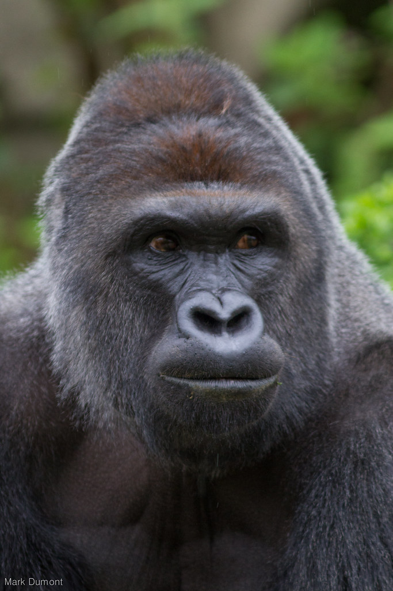
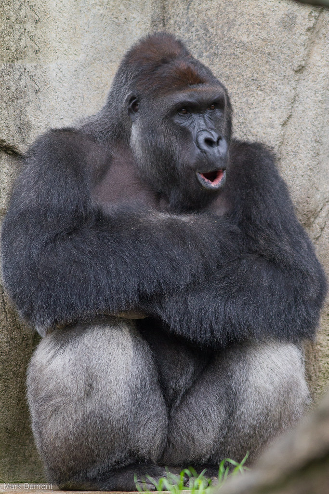
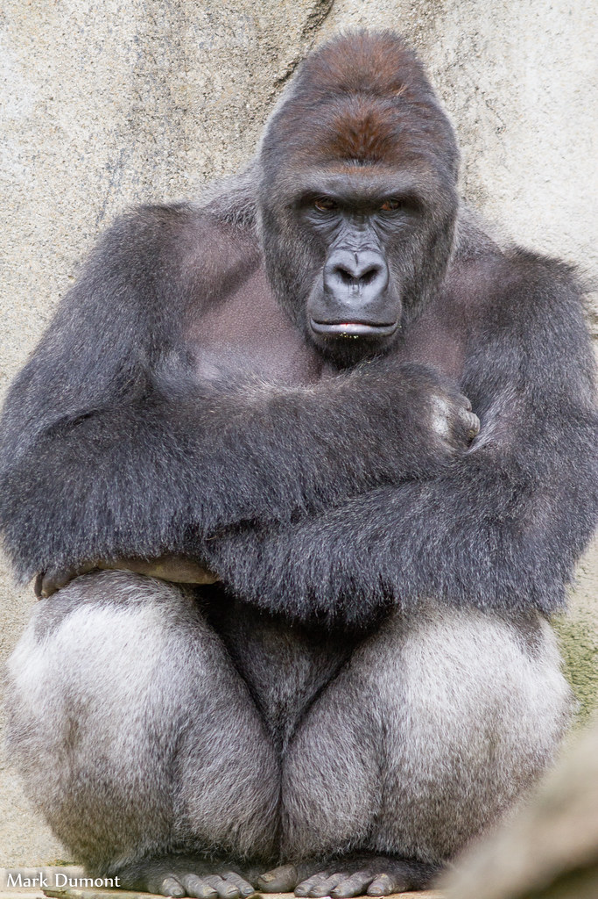
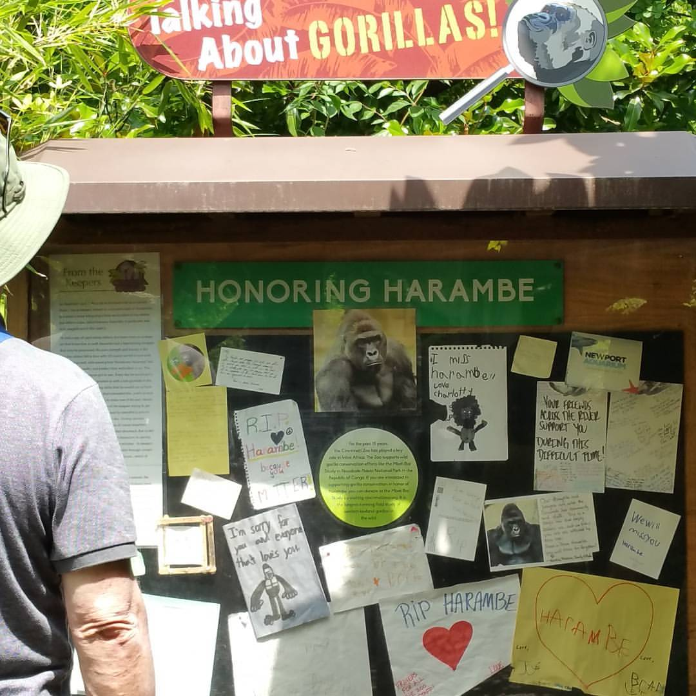

A candle kept lit for a cousin.

He was a gorilla, which means, strictly, he was not one of us. Apes aren't monkeys. But he was up in the same trees, and the same forest keeps getting harder to live in, so we keep a branch for him here.
Harambe was born at the Gladys Porter Zoo on May 27, 1999, and died at the Cincinnati Zoo on May 28, 2016, one day after he turned seventeen, when a small child fell into his enclosure and there was no version of the next few minutes where everyone came out of it whole. None of it was his fault. Almost none of it was anyone's, really. That is the part that stays with you.
What happened next was strange, and if you squint, kind of beautiful. The internet did not mourn him quietly. It mourned him loudly, ridiculously, with the rowdiest and least dignified salute it could think of, and it kept the salute going for years, long past the point any joke stays funny. Everyone agreed it was ironic. We don't think it was. We think a lot of people felt an ache with no clean place to put it, for a big gentle animal who never asked to be a symbol, and the ache came out sideways. The joke was the grief. They were never two separate things.
So here is a quiet place to set it down straight.



Living portraits by Mark Dumont, CC BY-NC 2.0. Memorial by Kyle McCarthy, CC BY-SA 2.0.
The morning the zoo announced his name. He was small, and it was just good news.
Apes aren't monkeys, but they're up in the same canopy. If you want to do more than light a candle, the Dian Fossey Gorilla Fund looks after the ones still climbing.